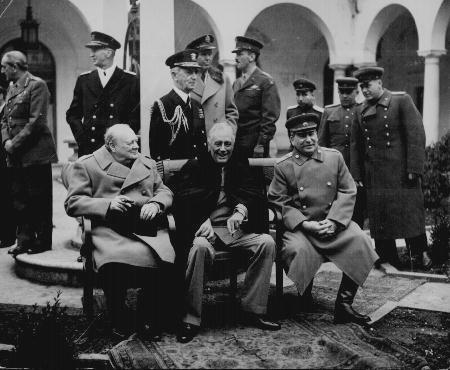

PARTI IN
CAUSA
TEMPI
E LUOGHI
OBIETTIVI
DEI BELLIGERANTI
GLI
ARMISTIZI E LA PACE
CONSEGUENZE
POLITICHE
CONSEGUENZE
ECONOMICHE
IL
COSTO IN VITE UMANE
Cronologia
Olocausto
Hiroshima
e Nagasaki
Auschwitz
Indice
Questi elencati sono solamente i più importanti perché in totale gli Stati belligeranti furono addirittura 61 contro 36 e le battaglie, dure e sanguinose, non si svolsero soltanto e prevalentemente sui fronti europei ma infuriarono anche nel Pacifico, in Asia e in Africa.
Cominciata come un conflitto
circoscritto all’Europa, la seconda guerra mondiale si allargò fino
a fondersi con uno scontro in Estremo Oriente, diventando una guerra globale
di proporzioni immani che non si limitò ai paesi belligeranti (la
maggior parte delle grandi potenze ed un gran numero di piccoli stati)
ma ebbe grandi ripercussioni anche sui paesi neutrali. La guerra cominciò
in Europa il 1° settembre 1939, quando la Germania iniziò l’invasione
della Polonia, e finì il 2 settembre 1945 con la resa del Giappone,
avvenuta formalmente a bordo della corazzata USA «Missouri»
nella baia di Tokyo.
I due maggiori teatri
delle operazioni furono l’Europa, compresa la costa del nord Africa ed
il nord Atlantico e l’Asia, più particolarmente il Pacifico centrale
e sud–occidentale, la Cina, la Birmania ed il Giappone.
La guerra che i nazisti
scatenarono nel 1939 fu una lotta per il potere mondiale: i regimi nazista
e fascista di Germania, Italia e Giappone attaccarono le democrazie occidentali
e il comunismo sovietico per il possesso dei mercati mondiali ma alla guerra
non furono estranei motivazioni ideologiche: la guerra fu anche lotta tra
opposte ideologia: totalitarismo e democrazia.
Causa prossima della
guerra fu l'invasione della Polonia (1° settembre 1939). Hitler aveva
preteso dalla Polonia la cessione di Danzica e di un "corridoio" che permettesse
la congiunzione della Prussia occidentale alla orientale. La Polonia respinse
l’ultimatum e la Germania, aspettandosi che ancora una volta le potenze
europee avrebbero accettato il fatto compiuto, come era successo per l'annessione
dell'Austria e dei Sudeti, occupò Danzica e varcò le frontiere
polacche. Questa volta Francia ed Inghilterra, legate da un patto di alleanza
militare alla Polonia, reagirono e appena due giorni dopo (3 settembre)
dichiararono guerra alla Germania.
Il Presidente degli Stati Uniti d’America e il Primo ministro, Sig. Churchill, in rappresentanza del Governo di Sua Maestà Britannica nel Regno Unito, essendosi riuniti a convegno, ritengono opportuno render noti taluni principi comuni della politica nazionale dei rispettivi Paesi, sui quali essi fondarono le loro speranze per un più felice avvenire del mondo.
primo
I loro Paesi non aspirano
a ingrandimenti territoriali o d’altro genere.
secondo
Essi non desiderano mutamenti
territoriali che non siano conformi al desiderio, liberamente espresso,
dei popoli interessati.
terzo
Essi rispettano il diritto
di tutti i popoli a scegliersi la forma di governo sotto la quale intendono
vivere; e desiderano vedere restituiti i diritti sovrani di autogoverno
a coloro che ne sono stati privati con la forza.
quarto
Fermo restando il rispetto
dovuto ai loro attuali impegni, essi cercheranno di far sì che tutti
i paesi, grandi e piccoli, vincitori e vinti, abbiano accesso, in condizioni
di parità, ai commerci e alle materie prime mondiali necessarie
alla loro prosperità economica.
quinto
Essi desiderano attuare
fra tutti i popoli la più piena collaborazione nel campo economico,
al fine di assicurare a tutti migliori condizioni di lavoro, progresso
economico e sicurezza sociale.
sesto
Dopo la definitiva distruzione
della tirannia nazista, essi sperano di veder stabilita una pace che offra
a tutti i popoli i mezzi per vivere sicuri entro i loro confini e dia affidamento
che tutti gli uomini, in tutti i paesi, possano vivere la loro vita liberi
dal timore e dal bisogno.
settimo
Una simile pace dovrebbe
permettere a tutti gli uomini di navigare senza impedimenti oceani e mari.
ottavo
Essi sono convinti che,
per ragioni pratiche nonché spirituali, tutte le nazioni del mondo
debbano addivenire all’abbandono dell’impiego della forza. Poiché
nessuna pace futura potrebbe essere mantenuta se gli Stati che minacciano,
e possono minacciare, aggressioni al di fuori dei loro confini, continuassero
a impiegare armi terrestri, navali ed aeree, essi ritengono che, in attesa
che sia stabilito un sistema permanente di sicurezza generale, è
indispensabile procedere al disarmo di quei paesi. Analogamente, essi aiuteranno
e incoraggeranno tutte le misure praticabili al fine di alleggerire il
peso schiacciante degli armamenti per tutti i popoli amanti della pace.
La fine delle ostilità
non fu seguita a breve distanza dai trattati di pace; quelli che
vennero stipulati furono datati in periodi molto successivi:
Trattati di Parigi del 10 febbraio 1947 per Italia, Romania, Bulgaria,
Ungheria e Finlandia;
Trattato di San Francisco dell'8 settembre 1951 per il Giappone (a cui
non partecipò l'URSS);
Trattato di Stato del 15 maggio 1955 per l'Austria.
Gli accordi di Yalta e Potsdam
I vincitori sovietici,
americani e inglesi si incontrarono a Yalta (4-12 febbraio) e a Postdam
(17 luglio - 2 agosto) per discutere l'organizzazione dell'Europa, e in
particolare del futuro della Germania, dopo la fine del conflitto.
Gli accordi stabilivano
l’influenza parziale o totale dell’URSS nei paesi dell’Europa orientale
(Polonia, Romania, Bulgaria, Ungheria, Cecoslovacchia, Jugoslavia, Albania)
che l’Armata rossa aveva liberato dalla dominazione tedesca, mentre l’Italia
e la Grecia, con tutte le altre nazioni occidentali, sarebbero dovute rimanere
sotto l’influenza alleata.
La carta d'Europa mutò
profondamente. Le maggiori annessioni furono realizzate dall’Unione Sovietica
la quale aggiunse alle terre occupate tra il 1939 e il 1940 (Galizia, Estonia,
Lettonia e Lituania) la Polonia orientale. Quale compenso per tale perdita
il nuovo governo polacco ricevette dalla Germania l’ampia fascia territoriale
comprendente importanti centri quali Stettino e Breslavia nonché
Danzica e il suo territorio, ad eccezione di Konigsberg passata all’Unione
Sovietica con il nome di Kaliningrad (da M.J. Kalinin, tra il 1922 e il
1946 uno dei massimi responsabili del governo sovietico). L'Italia dovette
cedere l'Istria e parte della Venezia Giulia alla Iugoslavia; l'Austria
e la Cecoslovacchia riottennero l'indipendenza. La Germania, privata di
una buona parte dei territori sul confine orientale (Prussia orientale,
Pomerania e Slesia, cedute alla Polonia), venne divisa in due repubbliche,
la Repubblica Federale Tedesca e la Repubblica Democratica Tedesca, mentre
Berlino risultò a sua volta divisa fra gli ex alleati in quattro
settori.
A Yalta inoltre si stabilì
la creazione dell’Organizzazione delle Nazioni Unite (ONU), erede della
Società delle Nazioni e retta da un consiglio di sicurezza composto
da Cina, Francia, Inghilterra, URSS, USA, con il compito di tutelare la
stabilità degli assetti esistenti e la pace.
Lo scenario mondiale del
dopoguerra fu caratterizzato dalla presenza di due grandi blocchi di paesi,
ordinati al loro interno secondo modelli di riferimento forniti dalle due
superpotenze, l'URSS ad est e gli USA a ovest. Nell'area soggetta all’egemonia
sovietica (campo socialista) si impose la dittatura dei partiti comunisti
filo–russi: le leve dell’economia erano centralizzate dallo stato, divenuto
unico proprietario delle grandi imprese; la grande proprietà fondiaria
era stata smantellata e la terra era stata distribuita ai contadini riuniti
in cooperative. A una più o meno ampia serie di misure assistenzialistiche,
si unì il ferreo controllo dell’opinione pubblica attraverso il
monopolio dei mezzi d’informazione e dell’educazione dei giovani sottratta
alla Chiesa.
Nell'area soggetta agli
Stati Uniti (mondo libero) prevalse la democrazia rappresentativa parlamentare,
a meno che non si temessero minacce per l’ordine sociale esistente; l’economia
fu ispirata ai principi libero–scambisti, nella completa tutela della proprietà
privata e della libera iniziativa imprenditoriale.
Il bilancio della seconda guerra mondiale fu terrificante: 55 milioni di morti, di cui 40 nella sola Europa. Il bilancio è ancora più tragico se consideriamo che più della metà delle vittime era costituita da civili. Questa allarmante proporzione, mai verificatasi in precedenza, è connessa in parte all’adozione di nuova tecniche distruttive, soprattutto i bombardamenti aerei che colpivano indiscriminatamente obbiettivi militari e civili, in parte al carattere di guerra partigiana e di rivolta politica e morale contro la barbarie nazista assunto dal conflitto. Le perdite umane furono certamente il più grave danno provocato dalla seconda guerra mondiale, ma non l’unico.
Morti e dispersi
| Nazionalità | Soldati | Civili |
| Americani | 220.000 | 0 |
| Inglesi | 370.000 | 60.000 |
| Francesi | 250.000 | 360.000 |
| Belgi | 10.000 | 90.000 |
| Olandesi | 10.000 | 190.000 |
| Norvegesi | 10.000 | 2.000 |
| Tedeschi | 3.250.000 | 3.800.000 |
| Italiani | 330.000 | 85.000 |
| Austriaci | 230.000 | 80.000 |
| Cecoslovacchi | 20.000 | 330.000 |
| Ungheresi | 120.000 | 280.000 |
| Jugoslavi | 30.000 | 1.360.000 |
| Greci | 20.000 | 140.000 |
| Bulgari | 10.000 | 10.000 |
| Rumeni | 200.000 | 470.000 |
| Polacchi | 120.000 | 5.300.000 |
| Finlandesi | 90.000 | 0 |
| Sovietici | 13.600.000 | 80.000.000 |
| Neozelandesi | 10.000 | 0 |
| Australiani | 30.000 | 0 |
| Cinesi | 3.500.000 | 10.000 |
| Giapponesi | 1.700.000 | 360.000 |
| totale | 24.400.000 | 30.917.000 |
| totale generale | 55.317.000 |